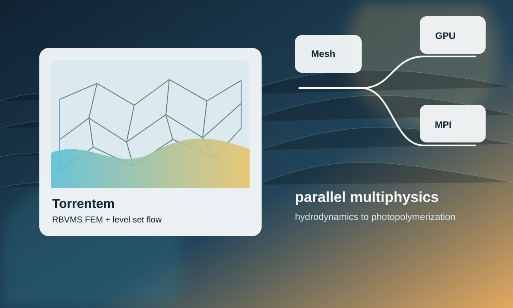

Numerical Foundation
Finite element formulations are designed for difficult transport and fluid-flow problems where stability, conservation, and boundary treatment matter.
Research software / C++ / CPU/GPU / FEM
Torrentem is a parallel multiphysics solver library developed to support my PhD research, spanning free-surface hydrodynamics, stabilized finite element methods, level-set tracking, and photopolymerization simulations.

Finite element formulations are designed for difficult transport and fluid-flow problems where stability, conservation, and boundary treatment matter.
The library is structured around mesh partitioning, MPI communication, and GPU-oriented kernels so large research cases can move beyond single-machine experiments.
Current applications range from hydrodynamic free-surface flows to small-scale additive-manufacturing processes where coupled physics are important.
The public site cannot expose the closed-source implementation, but the architecture is organized around explicit solver stages rather than a monolithic simulation script.
for (auto& partition : mesh.partitions()) {
partition.exchange_ghost_state();
element_kernel.assemble(partition.elements(), state, residual);
}
linear_solver.solve(jacobian, correction);
state.update(correction);
level_set.reinitialize_if_needed(state);Return to all projects, read related writings, or browse publications.